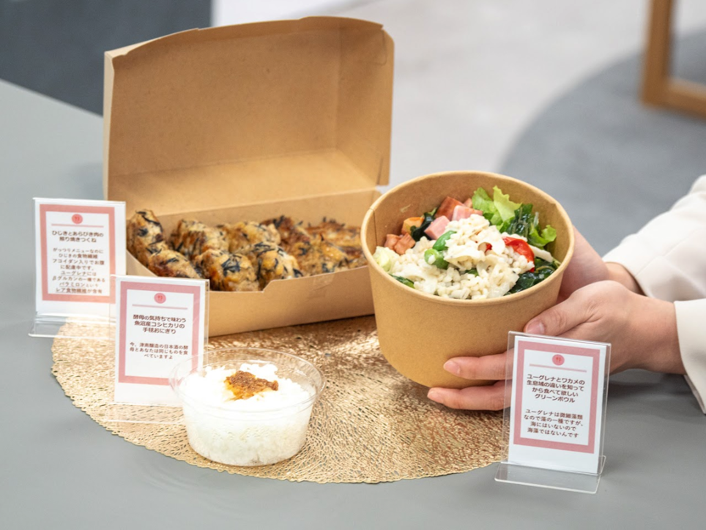
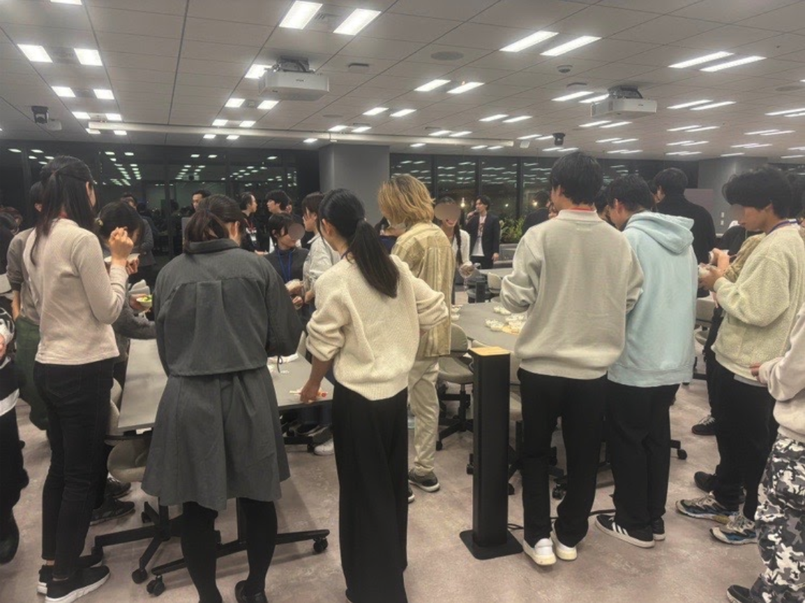
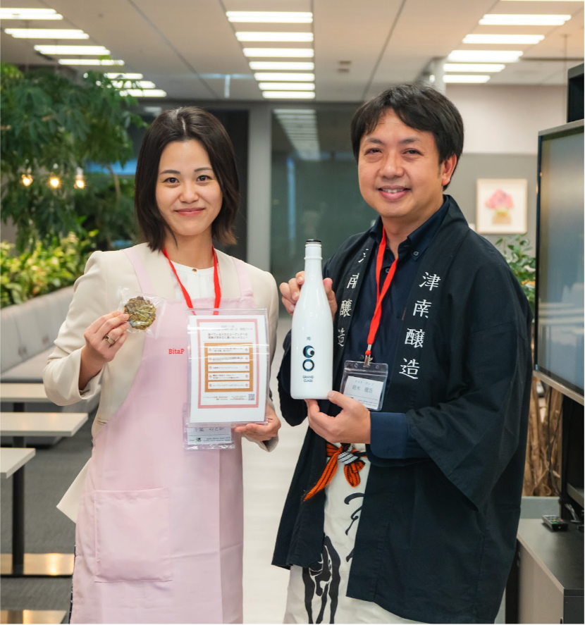
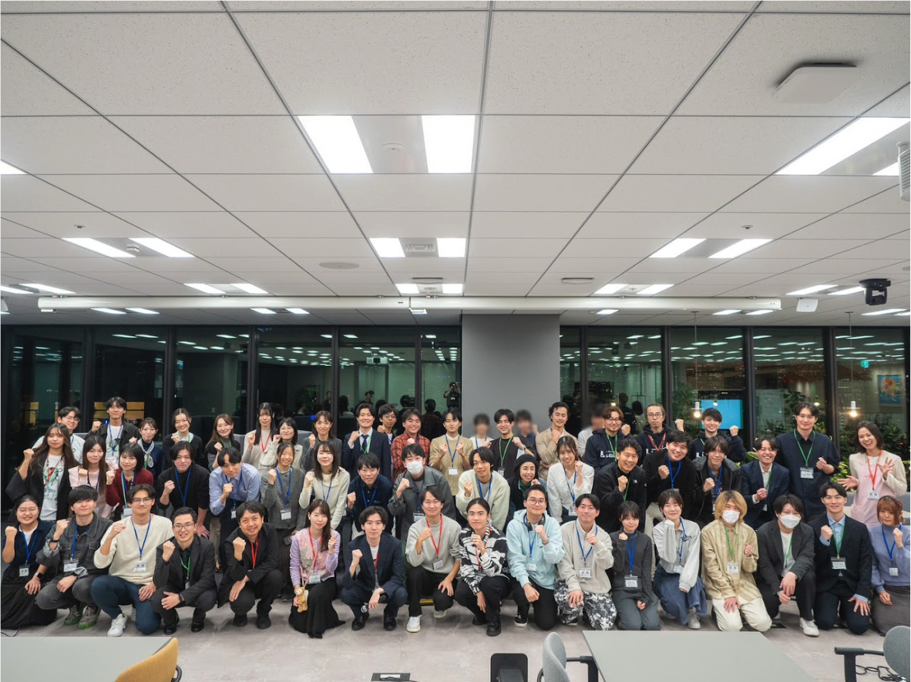
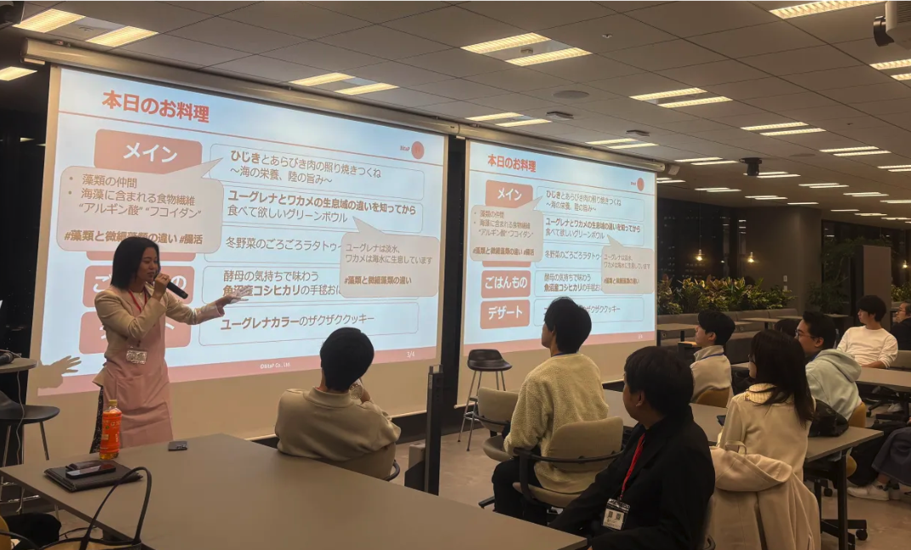

2025/11/05
【事業事例】バイオ系研究者コミュニティイベントでサイエンスケータリング企画を行いました
株式会社BitaP（本社：東京都、代表取締役：千葉のどか）は、2025年11月5日に開催された「grubio Meetup Event vol.12」（主催：株式会社grubio）において、メニュー監修・ケータリング企画・運営支援を担当しました。
本イベントは、ライフサイエンス分野の研究者や支援者が集う対面交流イベントであり、BitaPは来場者の専門分野と親和性の高い「サイエンス×食」の演出を行いました。
「grubio Meetup」は、ライフサイエンス領域に関わる研究者・技術者及びそれを支援する社会人の方が集い、知見共有やネットワーキングを行うコミュニティイベントです。
第12回となる今回は、3人の研究者による研究発表に加え、ゲストとして株式会社ユーグレナの共同創業者である鈴木健吾様がいらっしゃり、株式会社grubioの代表の佐藤龍飛様とのトークセッションがありました。今回のイベント趣旨に合わせ、懇談会ではバイオやユーグレナに関連した料理を提供しました。スポンサー企業である株式会社LabBase様からは研究を頑張る学生の就活支援サービスのご説明をいただきました。
会場はInnoCom Square（東京都港区赤坂2丁目4-6 赤坂グリーンクロス23F）、来場者は研究者・学生・社会人合わせて約60名でした。
【当日のメニュー】
BitaPはゲスト企業・登壇者の活動にちなんだメニューを提供しました。
ユーグレナ（微細藻類）をモチーフにした緑色のクッキー「ユーグレナカラーのザクザククッキー」
藻類仲間であるひじき入りのメイン料理「ひじきとあらびき肉の照り焼きつくね 〜海の栄養、陸の旨み〜」
藻類仲間であるワカメなどの海藻を使用した料理「ユーグレナとワカメの生息域の違いを知ってから食べて欲しいグリーンボウル」
ゲストの株式会社ユーグレナの鈴木健吾さまが代表を務める津南醸造でも使用されている「魚沼産コシヒカリ」を使用したごはんもの「酵母の気持ちで味わう魚沼産コシヒカリの醤油糀乗せ」など 全６品
また、料理の背景を解説する研究ポップや論文紹介カードを会場内に展示し、
食を通じて科学的テーマを体感できる演出を行いました。
【イベント主催者からのコメント】
株式会社grubio 代表 佐藤龍飛様
「私自身、研究というものがもっと社会と密接になって欲しいという想いを持って活動を進めております。そういった中で、食という人間が生きる上ではかかせないものに対して、科学的知見を組み入れるというBitaP様のアプローチはまさにその手段として素晴らしい取り組みであると考えております。
今回は非研究者の方も参加されておりましたが、少しでも研究という営みを身近に感じていただけたのではないかと考えております。」
BitaPは今後も、科学的知見を活かしたケータリング企画や企業イベント支援を通じて、研究者・企業・地域をつなぐ食のデザインを展開してまいります。ご関心のあるイベント主催者様はメールよりお問い合わせください。
【写真・クレジット】
撮影協力：株式会社grubio （https://grubio.jp/）
会場：InnoCom Square
料理企画・監修：株式会社BitaP
料理提供：Aun Kitchen （https://aun-kitchen.com/）




